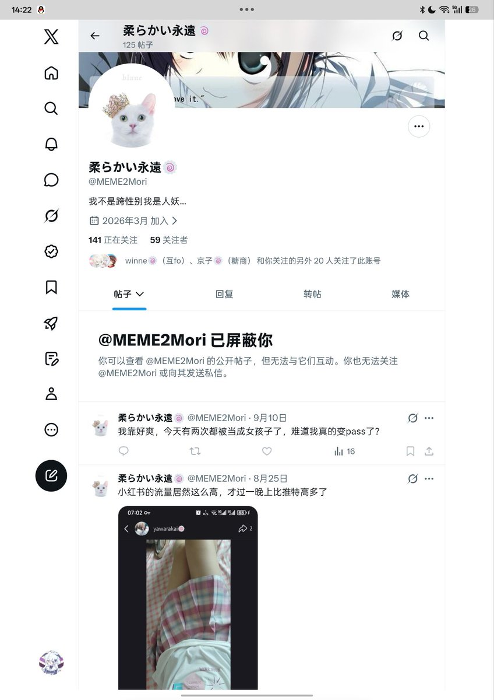
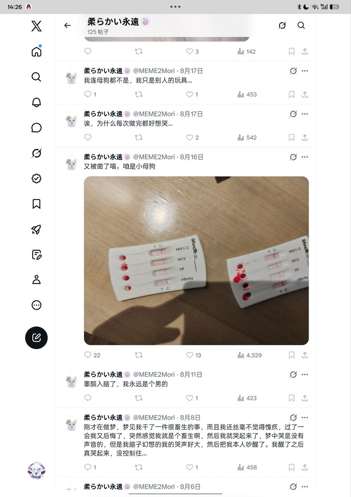

windigo
@fcjdfb
@AacerF59616 那个表情好像是我先发的，怎么玩没流量😭


🌙艾丝尔娜·芙蕾琳🌙ᴹᴷ⁻ᴱᵐᵇᵉʳ
@AacerF59616
我的天哪，你一个圆角自恨跨，还评判上我了吗？
你算什么东西，能不能先掂量掂量自己做过什么再来评价我啊。我说傲慢一点，你这种从事不合法工作还恬不知耻的自恨跨连给我评论都不配。自己搁那圆角给皮燕子都整烂了然后觉得我玩玩具不好好洗犯恶心。大姐你自己想想你适合这样说我吗？ https://t.co/qqR6v1TVzc